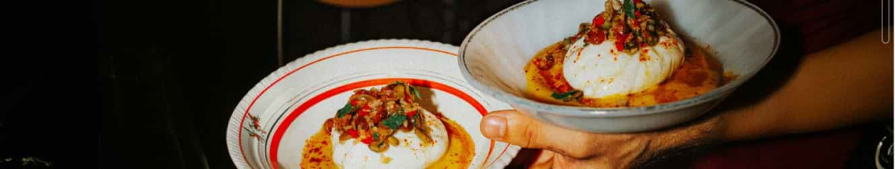
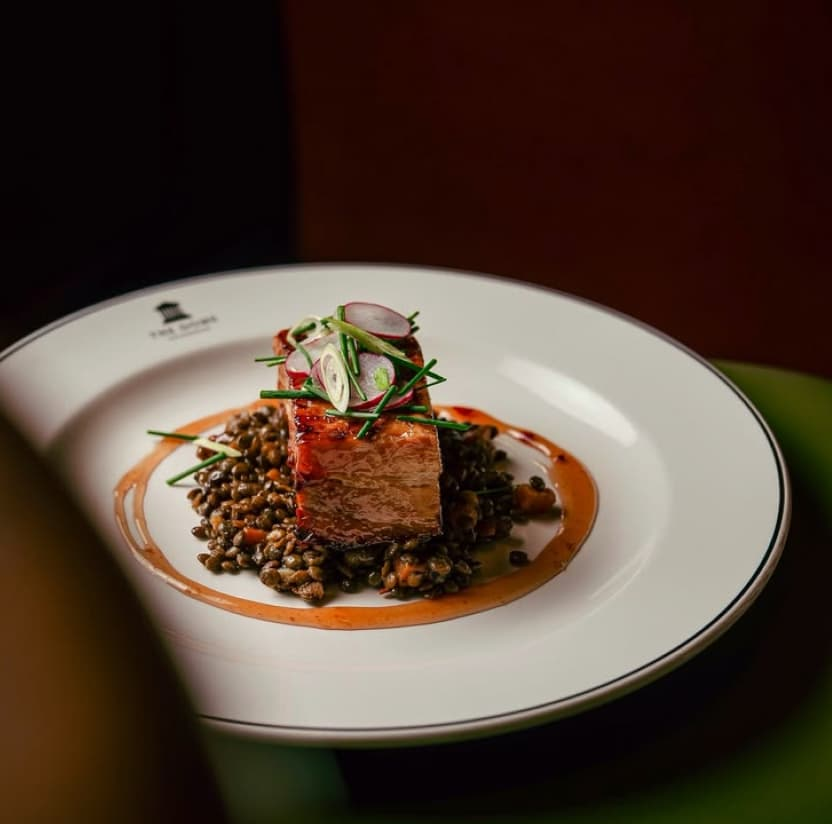
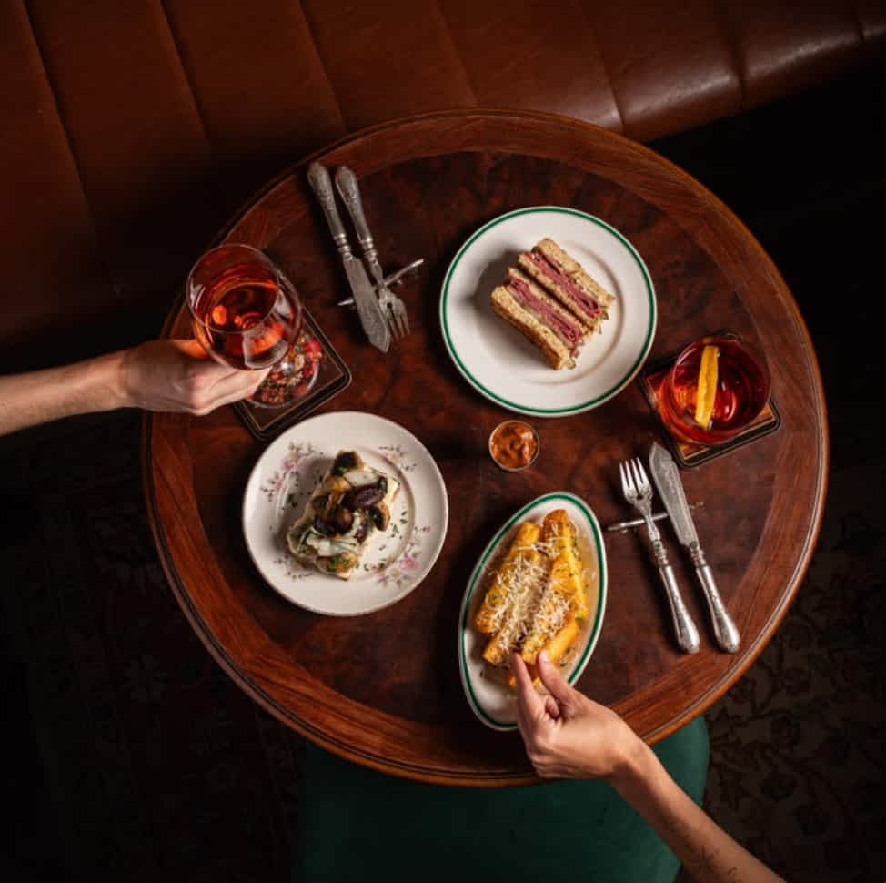
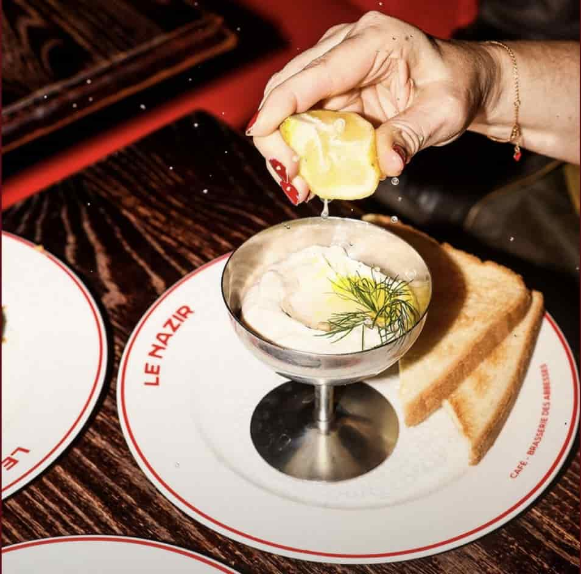

Velkommen til din madguide til Amager! Her finder du inspiration til alt fra budgetvenlig hverdagsmad og hyggelige spisesteder til restauranter, hvor du kan forkæle dig selv lidt ekstra. Uanset smag og budget hjælper vi dig med at finde din næste gode madoplevelse.

Forkælelse
Budget
Hverdag